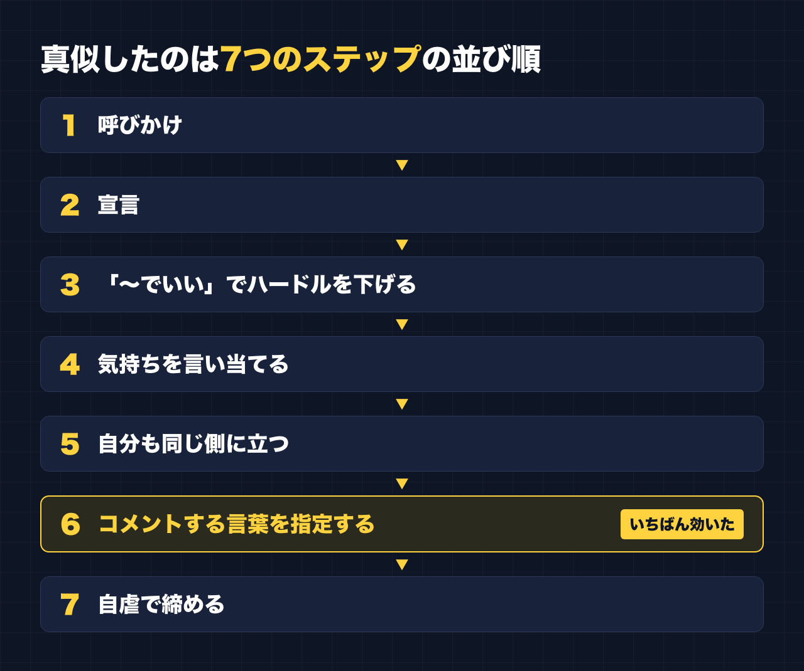

1. タイトルをコピーして、note のタイトル欄に貼る
2. 「本文1をコピー」から順にコピーし、note の本文に貼る
3. 青いラベルの位置に、images フォルダの同じ名前の画像を入れる（本文には貼られません）
※ 見出しが普通の文字になった場合は、その行を選んで「大見出し」を設定してください
表示6.4万回。いいね2,065。コメント1,306。
2026年3月、私が別で運用しているアカウントの、たった1本の投稿の数字です。そのアカウントのフォロワーは数百人。それまでの投稿は、反応が100にも届いていませんでした。
特別な才能があったわけでも、バズる裏技を知っていたわけでもありません。やったのは、伸びている投稿の「構成」を真似したことだけです。
この記事では、そのとき何をしたのか、数字はどうだったのか、そして「1本当たったあと、どうなったか」まで、正直に書きます。
それまでの投稿は、反応100にも届かなかった
そのアカウントの投稿は、反応が100に届いたことがありませんでした。
副業の講座をいくつも受けてきて、どの講座でも言われることは、根本的には同じでした。
- 続ける
- 売れている人を真似る
- 手を動かす
「続ける」と「手を動かす」は、それなりにやっていました。足りなかったのは、2つ目の「真似る」だったのだと思います。
真似する相手は「フォロワー数百人なのに伸びている投稿」
真似をするとき、最初に決めたことがあります。フォロワーが何十万、何百万といる人の投稿は、参考にしないことです。
フォロワーが多い人の投稿は、中身がどうであれ、たくさんの人に届きます。伸びた理由が「中身」なのか「その人だから」なのか、見分けがつきません。
逆に、フォロワーが数百人しかいないのに、大きく伸びている投稿があります。こちらは、伸びた理由が中身や形にある可能性が高い。つまり、自分でも真似できる部分がある、ということです。
探すのは、自分と同じくらいの規模なのに、なぜか伸びている投稿。ここがいちばん大事なところだと思っています。
真似した「構成」は7つのステップ
見つけた投稿を分解すると、流れは7つのステップになっていました。自分の投稿も、この順番どおりに組み立てました。

1. 呼びかけ
2. 宣言
3. 「〜でいい」でハードルを下げる
4. 気持ちを言い当てる
5. 自分も同じ側に立つ
6. コメントする言葉を指定する
7. 自虐で締める
テーマは「〇〇部、発足します」という形でした。何かの部をつくる、と宣言して、参加を呼びかける投稿です。
真似したのは、元の投稿の言葉ではなく、この並び順です。
いちばん効いたのは「コメントする言葉の指定」
数字を見て、いちばん目立ったのはコメント数でした。1,306件です。いいねの半分以上の数のコメントがついています。
ふつうの投稿で、ここまでコメントが集まることはまずありません。理由として大きかったとみているのが、6つ目のステップ、「コメントする言葉を指定する」です。
「よかったらコメントください」では、人は動きません。何を書けばいいか考えないといけないからです。考えるのは面倒です。
でも「〇〇とコメントしてください」と、書く言葉そのものを指定されると、考えなくていい。短い言葉を打つだけで参加できます。この「考えなくていい」が、コメントのハードルを一気に下げたのだと思います。
3つ目の「〜でいい」も同じ方向です。参加の条件をどんどん下げていって、最後に「この言葉だけ書けばいい」と出口を用意する。構成全体が、読んだ人が一歩だけ動けるように組まれていました。
でも、1本当たっても続かなかった
ここからが、あまり書かれない部分です。
その投稿のあと、次の投稿、その次の投稿は、いいね一桁台に戻りました。
1本が6.4万回表示されても、アカウント全体が伸び続けたわけではありません。当たった1本は当たった1本で、次の投稿はまた、ほぼゼロからのスタートでした。
ここで分かったのは、「構成を真似る」は当たりを出す方法にはなるけれど、それだけで伸び続ける方法ではない、ということです。1本当てたあとも、結局は続けることが必要でした。講座で言われていた「続ける」「真似る」「手を動かす」は、どれか1つでは足りなくて、3つともいるのだと思います。
それでも、反応100にも届かなかったアカウントでも、形を変えるだけで6.4万回まで届いた。ここから言えるのは、「センスがないから伸びない」のではなく、「形を知らなかったから伸びなかった」部分もある、ということです。
今日からできること
同じことを試したい人向けに、無料で書けるところまでまとめます。
- 真似する相手は、フォロワー数百人なのに伸びている投稿にする
- 真似するのは言葉ではなく、並び順（構成）
- 最後に「この言葉でコメントしてください」と、書く言葉を指定してみる
- 1本当たっても、そこで止めない
AI は、この「伸びている投稿を探して、構成を分解する」作業にとても向いています。私も、リサーチと下書きは AI に手伝ってもらっています。ただ、最後の言葉は自分で足しています。AI が書いたきれいな文章より、自分がボソッとつぶやいた一言のほうが、反応があるからです。
最後に
ここからは宣伝です。
今回の話を、実際に使える形にまとめた有料記事を準備しています。7つのステップそれぞれのテンプレートと、伸びている投稿を AI にリサーチさせて構成を分解するためのプロンプトを入れる予定です。
関連する有料記事（準備中）：フォロワー数百人のアカウントで6.4万回表示された投稿の"構成"を分解する
公式LINEでは、「特典」と送っていただくと、LINE限定のプロンプト5本をお届けしています。
https://lin.ee/RzyA13P
「副業ドラフト」は、AI の質問に答えるだけで、副業に使える強みの棚卸しと Threads の下書きを作るツールです。Threads の下書き3本までは無料で使えます。構成を真似しようにも「何を書けばいいか分からない」という人は、ここから試してみてください。
https://note-threadssf.onrender.com
Threads では、こうした試行錯誤を日々発信しています。
https://www.threads.com/@shachiku_mao
最後まで読んでいただき、ありがとうございました。